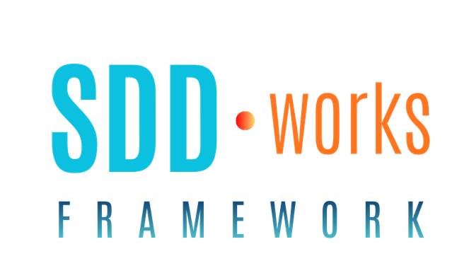

Tab order follows content/.instructions-tabs.json. Default tab on load is Setup.
Tab order matches the shipped pack config (Setup through Learn Scrum).

Built on Harness. Ready for Scrum
SKILLS.RULES.AGENTS.TEMPLATES
Install the SDD.works framework in your AI agent tools.
Once MCP is connected, type to AI:
Install SDD.works Framework
or, directly call MCP tool by giving the command:
sdd_install_framework
Manual setup
If your agent cannot edit its own MCP config, add the remote MCP URL yourself.
{
"mcpServers": {
"framework.sdd.works": {
"url": "https://sdd.works/mcp"
}
}
}
Run the command for Claude Code or Codex, or merge the sample above into your MCP file for the others. Keep every other entry.
-
Claude Code
claude mcp add --transport http --scope user framework.sdd.works https://sdd.works/mcp
-
Codex
codex mcp add framework.sdd.works --url https://sdd.works/mcp
-
Cursor
Manually paste the sample above into
~/.cursor/mcp.json. -
CodeBuddy CN / WorkBuddy CN
Manually paste the sample above into
~/.codebuddy/mcp.json. -
TRAE CN
Manually paste the sample above into
~/Library/Application Support/Trae CN/User/mcp.json.
To pull the latest pack, call the MCP tool: sdd_update_framework
Supported AI agents
- Claude Code
- Codex
- Cursor
- CodeBuddy CN / CodeBuddy / WorkBuddy CN
- TraeCode CN / TRAE
- GitHub Copilot
- AWS Kiro
What the framework does
Scrum in SDD: Defines a Scrum-aligned approach to Spec-Driven Development.
SDD.works: Installs a framework pack for implementing Scrum in SDD under Harness Engineering governance.
Features
Agents
| Name | Role |
|---|---|
| ethan | Local Scrum in SDD coach; does not install the pack |
Skills (Scrum and process)
| Name | Role |
|---|---|
| sdd-update-project | Set specs folder and module map; write artifacts-map.json after confirm |
| sdd-audit-artifacts | Read-only audit: Uninitialized, Index broken, or Usable |
| sdd-review-status | Compare the five process files and propose next steps |
| sdd-refine-backlog | Review product backlog readiness; write after the user picks |
| sdd-plan-sprint | Assign PBIs to sprints; sprint open and close in one skill |
| sdd-retrospective | Retrospective after DoD, sprint-end, or on demand |
| sdd-spec-to-build | Engineering readiness then build for one SBI |
| sdd-update-specs | Sync engineering specs with the implementation |
| atdd-expert | User stories and Gherkin acceptance criteria |
| sdd-build-agent | Create or revise an agent file after confirm |
| sdd-create-skill | Create or revise a skill file after confirm |
| sdd-create-rule | Create or revise a rule file after confirm |
Skills (Build helpers)
| Name | Role |
|---|---|
| testing-expert | Test strategy, layers, and execution |
| fullstack-engineer | Web feature end to end in the project stack |
| frontend-developer | UI components, pages, and client wiring |
| frontend-designer | Visual design for new or redesigned UI |
| ai-architect | AI and ML system design |
| rag-expert | RAG architecture and recommendations |
| mcp-expert | MCP server design and integration |
| improve-prompt | Rewrite a draft prompt for paste |
Lite HTTP install ships a subset of build helpers and friendly-language.mdc only.
Rules
| File | Role |
|---|---|
| sdd-dod.mdc | Definition of Done; backlog close writes |
| sdd-incremental-delivery.mdc | Finish one SBI before the next |
| sdd-realtime-status.mdc | WIP checkpoints on process files |
| friendly-language.mdc | Clear chat and Markdown |
Artifacts
Framework templates
| File | Role |
|---|---|
| pack-scrum-in-sdd.md | Names and meaning for Scrum in SDD |
| sdd-scrum-practices.md | What, how, and when for each job |
| artifacts-map.json | Workspace index at the repo root |
| constants.json | Skill keys, rule keys, instructions URL |
Process (five files)
| File | Role |
|---|---|
| product-backlog.md | PBIs and product Definition of Done |
| sprint-backlog.md | Sprint goal, SBIs, and RIDs |
| status.md | Current item and open OGTs |
| changes-log.md | Shipped change history |
| issues-log.md | Defect log |
Engineering (per module)
| Pattern | Role |
|---|---|
| {stem}-stories.md | User stories and acceptance criteria |
| {stem}-design.md | Design spec |
| {stem}-tests.md | Test spec |
| architecture.md | Product architecture template |
| release.md | Local start and go-live order |
| test-strategy.md | Product test strategy |
| .secrets | Secret names only; values stay outside git |
Scrum in SDD
Author: Ethan Huang
This document defines how Scrum is adopted in Spec-Driven Development, with Agentic Programming under Harness Engineering principles.
The Scrum Guide defines Scrum. This document does not replace it.
Read Part I through Part III for SDD and the Scrum in SDD definition. Part IV is the 2020 Scrum Guide summary at the end as reference.
Index
- Part I — Agentic Programming, Harness Engineering, and SDD
- Part II — The gap in classic Scrum for agentic SDD
- Part III — Scrum in SDD guide (KEEP / ADD / MODIFY)
- Part IV — The 2020 Scrum Guide summary
Part I — Agentic Programming, Harness Engineering, and Spec-Driven Development (SDD)
With Agentic Programming and Spec-Driven Development, under Harness Engineering principles, software delivery is reshaped.
Agentic Programming
Agentic Programming is a software development approach in which AI agents act as active collaborators in the engineering workflow: planning, coding, testing, debugging, reviewing, and sometimes operating software.
Harness Engineering
Harness Engineering is the discipline of designing the runtime framework that enables AI agents to operate reliably, safely, and effectively in real-world environments.
- Tool integration: connects agents to files, APIs, and systems
- Execution orchestration: manages planning, action, checking, and retries
- Permissions and guardrails: constrain actions and reduce risk
Spec-Driven Development (SDD)
Spec-Driven Development (SDD) is an approach within agentic programming in which the specification is the primary artifact.
Part IV — The 2020 Scrum Guide (summary)
Purpose of the Scrum Guide
The Scrum Guide defines Scrum, and every element serves a purpose. Partial implementation can make Scrum ineffective.
Scrum applies to complex work beyond software. “Developers” refers to anyone doing that work, so anyone who gains value from Scrum is included.
Scrum Definition
Scrum is a lightweight framework that helps people, teams and organizations generate value through adaptive solutions for complex problems.
Scrum Theory
Scrum is founded on empiricism and lean thinking. Empiricism asserts that knowledge comes from experience and making decisions based on what is observed.
Scrum Values
Successful use of Scrum depends on people becoming more proficient in living five values: Commitment, Focus, Openness, Respect, and Courage.
How an IDE starts a custom agent (Ethan)
The pack ships agents/ethan.md. Each IDE loads agent files from its own folder. This page covers where to put the file, how to start Ethan, and when you must invoke Ethan again for the next reply.
Verified here (2026-09-30): Cursor, TRAE, TRAE CN.
Vendor docs only (same date): Claude Code, CodeBuddy CN, Cline, Codex, Copilot CLI.
Shared notes
- Onboard runs on Ethan’s first pass in a chat (ledger and audit when the prompt says so). A new chat can run onboard again.
- Codex uses
*.tomlagent files. Copilot CLI uses*.agent.md. Plainethan.mdalone does not register on those tools.
Invoke Ethan again (three patterns)
| Pattern | What happens |
|---|---|
| Same chat | Keep the thread open. Ethan answers follow-ups until you start a new chat. |
| One task | Ethan finishes one job. The main assistant gets the next line. Invoke Ethan again for the next job. |
| Separate thread | Ethan runs in another conversation. The main chat usually stays on the main assistant. |
Cursor
| Topic | Detail |
|---|---|
| Agent file | ~/.cursor/agents/ethan.md or <project>/.cursor/agents/ethan.md (project wins). Frontmatter name is the slash command /ethan. Nothing under templates/ registers. |
| Start Ethan | Type /ethan, usually at the start of the chat. |
| Invoke Ethan again | Same chat. Follow-ups in that thread stay with Ethan. |
| New chat | Plain text does not start Ethan. Use /ethan again. Onboard may run again. |
TRAE
| Topic | Detail |
|---|---|
| Agent file | ~/.trae/agents/ethan.md |
| Setup | Settings → Beta → turn Subagents on. |
| Start Ethan | Type @. The built-in agent calls Ethan when your message matches description in the file. /ethan does not work. |
| Invoke Ethan again | Separate thread. The parent chat is not guaranteed to stay on Ethan. |
TRAE CN
| Topic | Detail |
|---|---|
| Agent file | ~/.trae-cn/agents/ethan.md |
| Setup | 设置 → Beta → Subagents → 启用 Subagents 目录. |
| Start Ethan | @ or @智能体 when the message matches description. /ethan does not work. |
| Invoke Ethan again | Separate thread. Same as TRAE. |
Claude Code
| Topic | Detail |
|---|---|
| Agent file | ~/.claude/agents/ or .claude/agents/ (Markdown). Slash commands live under commands/, not agents/. |
| Start Ethan (one task) | Mention Ethan in text, or @ and pick Ethan. |
| Invoke Ethan again (one task) | One task. Main Claude gets the next line. Ethan does not see the full parent chat. |
| Start Ethan (session) | claude --agent ethan |
| Invoke Ethan again (session) | Same chat in that terminal until you leave the session or remove the agent file. |
| Note | /agents only points you at the agents folder (v2.1.198). |
CodeBuddy CN
| Topic | Detail |
|---|---|
| Agent file | ~/.codebuddy/agents/ (user or project). /ethan slash commands live under commands/, not agents/. |
| Start Ethan (agentic) | Main agent delegates when the task matches description. |
| Invoke Ethan again (agentic) | One task. Main agent holds the thread until it delegates again. |
| Start Ethan (manual) | Pick Ethan in the Agent box. |
| Invoke Ethan again (manual) | Same chat until you pick another agent. |
| CLI one shot | Name Ethan in the prompt, or --agents JSON for one run. |
| CLI session | --agent ethan. Later lines in that session go to Ethan. |
Cline
| Topic | Detail |
|---|---|
| Agent file | ~/.cline/agents/ or project .cline/agents/. ~/.cline/data/settings/agents/ is a different plugin path. |
| Start Ethan | Parent calls start_subagent with the preset name. No slash command to switch this chat to Ethan. |
| Invoke Ethan again | Separate thread. Follow-ups use the subagent session id. Each new task needs a new call. |
Codex
| Topic | Detail |
|---|---|
| Agent file | ~/.codex/agents/*.toml or .codex/agents/*.toml (name, description, developer_instructions). Not ethan.md. |
| Start Ethan | Ask Codex to delegate to the TOML name. |
| Invoke Ethan again | Separate thread. Each delegation is a new spawn. /agent switches threads. It does not create an agent. |
| Known gaps | Some sessions may not spawn a project agent by name (GitHub issues 15250, 26408). |
Copilot CLI
| Topic | Detail |
|---|---|
| Agent file | ~/.copilot/agents/*.agent.md or .github/agents/*.agent.md (user wins over repo). Id is the basename without .agent.md (e.g. ethan.agent.md). |
| Start Ethan (interactive) | /agent and pick the profile, or name Ethan in the prompt. |
| Invoke Ethan again (interactive) | Docs do not promise the profile sticks. Use /agent again or name Ethan in the prompt. |
| One shot | copilot --agent=ethan --prompt "..." |